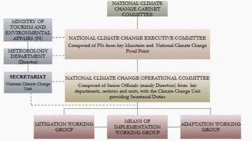

September 2025
Eswatini’s economy remains fragile, with GDP growth averaging just above 2 percent over the past two decades, one of the lowest in the region. The economy rebounded to an estimated 4.9 percent in 2023, up from 0.5 percent in 2022, but this recovery masks underlying climate-related vulnerabilities.1 Total GDP in 2023 stood at approximately USD 4.96 billion, with GDP per capita at about USD 4,162.2 Agriculture, which contributes 6–8 percent of GDP and employs most rural households, saw a 33 percent decline in maize production due to drought, while sugarcane performed relatively better under irrigation. Services and manufacturing helped drive recent growth, yet unemployment remains relatively high at 35.4 percent overall and 48.7 percent among youth, who constitute 73 percent of the population. Poverty persists at 58.9 percent, with a Gini index of 0.55, and food insecurity affects between 20 and 30 percent of the population. These statistics highlight the severe socio-economic risks climate change poses to livelihoods, particularly in rural areas prone to droughts and floods, where shocks worsen inequality and undermine social protection efforts.
In the past decade Eswatini has suffered the effects of extreme weather events affecting livelihoods, ecosystems and the national economy. Notably, the country has witnessed recurrent droughts, such as the 2015–2016 El Niño-induced drought, which severely affected agricultural productivity, resulting in widespread crop failure, livestock losses, and heightened food insecurity, especially among smallholder farmers.3 The crisis affected 492,000 people, with a total cost of SZL3.8 billion to address the various impacts.4 Rising temperatures and shifting rainfall patterns have also contributed to reduced water availability in key river basins and declining dam levels, posing risks to both rural water access and hydropower generation.5 Recent tropical storms, such as Cyclone Eloise in January 2021, caused widespread damage to roads, bridges and urban drainage systems, particularly in Highveld regions. This intense rainfall led to power outages and the flooding of commercial centres in Mbabane, exposing critical weaknesses in existing infrastructure.. The high winds further worsened the situation on infrastructure. Flash floods and storm events have become more frequent, causing infrastructure damage and displacing vulnerable communities, particularly in low-lying areas.6 The 2023 drought, albeit smaller in scale, left 238,500 people in a situation of food insecurity and requiring humanitarian assistance.7 Similarly, increased temperatures and dry spells are intensifying the risk of wildfires, with 866 cases recorded between July and August 2024.8
The dynamics alluded to above showcase how Eswatini’s economic outlook is inseparable from the climate transition, for example through energy self-sufficiency, a less volatile agricultural output or efficient water use.
The formulation of Eswatini's NDC 3.0 was a highly collaborative and inclusive process led by the Ministry of Tourism and Environmental Affairs (MTEA), with the Ministry of Economic Planning and Development (MEPD) serving as a co-focal point. High-level oversight was provided by the National Climate Change Executive Committee (NCCEC), with technical work guided by a dedicated NDC Technical Committee. This institutional framework was complemented by a broad, country-driven consultative process to ensure whole-of-society ownership, which included 17 multi-stakeholder workshops reaching over 850 representatives from government ministries, local authorities, the private sector, civil society organisations (CSOs), and academia. Targeted outreach engaged key private sector bodies was prioritized seeking to anchor climate targets within Eswatini's productive sector. A defining feature of the process was its deliberate focus on inclusivity; special attention was given to the participation of youth, children, women, and vulnerable groups to ensure their perspectives were integrated into the national climate commitments. Youth networks contributed innovative ideas while women’s groups highlighted gender-responsive measures, reflecting a commitment to ensuring that climate actions are co-created, equitable, and beneficial to all segments of society. The result of this is a powerful vision to embed Just Transition principles across sectoral actions.
Eswatini’s new economy wide target, compared to the Business as Usual (BAU) scenario, aims to reduce its greenhouse emissions (GHG) by 2.24 MtCO₂eq in 2035. This is an increase of 115% from the 1.04 MtCO₂eq reductions by 2030 in NDC 2.0. Subject to national circumstances, Eswatini aims to mobilize domestic resources to abate 695 ktCO₂eq tonnes of GHG emissions (31% of the 2.24 million tonnes). The reduction of the remaining 1.55 MtCO₂eq tonnes (69% of the total) will be achieved through a combination of international support, including finance, investments, technology development and transfer, and capacity building.
The latest greenhouse gas (GHG) for Eswatini was compiled in 2024 with 2022 as the reporting year with net sink position of –2,783.70 kt of CO₂eq. The energy sector in Eswatini was the largest GHG emitter in 2022, contributing 1,265.55kt CO2eq (54.46%) emitted mostly from liquid fuels, natural gas and coal, followed by Agriculture accounting for 866.05 ktCO₂eq (37.95%). The least contributors to emissions in 2022 were industrial processes and product use (IPPU) with 72.15 kt CO₂eq (3.16%) and waste with 78.20 ktCO₂eq (3.43%). The total GHG emissions were 2,281.95 kt CO2eq against a sink of -5,065.65 ktCO₂, giving a net sink of - 2,783.70 ktCO2eq in 2022 (Eswatini, 2024). Removals of CO₂ by forests, timber plantations and land-use practices continue to provide an option to offset national emissions in Eswatini.
Table 1: Trends in GHG emissions (Including baseline projections)
Sector |
Base year (2010)-kt |
NDC Baseline (2022) |
Endline (2035)-kt |
% Change (2010 to 2022) |
% Change (2022 to 2035) |
Energy |
998.17 |
1,265.55 |
3,048.75 |
26.79% |
140.901% |
IPPU |
44.69 |
66.79 |
103.76 |
49.45% |
55.35% |
Agriculture |
1,043.06 |
866.03 |
835.01 |
-16.97% |
-3.58% |
Waste |
69.71 |
78.24 |
88.24 |
26.58% |
12.78% |
Total emissions |
2,155.63 |
2,276.62 |
4,075.76 |
5.61% |
79.03% |
FOLU (Sink) |
-4,978.84 |
-5,061.43 |
-4602.17 |
-1.66% |
9.07% |
Overall |
-2,823.21 |
-2,784.81 |
-526.41 |
1.36% |
81.10% |
Overall, estimates in a non-NDC scenario show that Eswatini’s GHG emissions will keep increasing, driven by GDP growth and land use changes. The mitigation goal will be achieved through the promotion and implementation of key priority mitigation initiatives, including the following:
Sector |
Energy |
Outcome |
Renewable energy scaled for decarbonized, reliable and inclusive electricity supply. |
|
Target (Gases covered) |
1,272.04 ktCO2eq CO2, CH4 and N2O |
Actions planned |
Electricity generation from clean energy sources.
|
Sector |
Energy |
Outcome |
Universal Access to Clean and Efficient Cooking Solutions for Health, Equity and Climate Action. |
|
Target (Gases covered) |
72.19 ktCO2eq–Efficient cooking 11.54ktCO2eq - Clean Cooking Total: 83.74 ktCO2eq CO2, CH4 and N2O |
Actions planned |
|
Sector |
Energy |
Outcome |
Enhanced energy efficiency for low-carbon growth and economic resilience across sectors. |
|
Target (Gases covered) |
CO2, CH4 and N2O |
Actions planned |
Improve energy efficiency:
|
Sector |
Energy |
Outcome |
Low-carbon and inclusive transport systems for sustainable mobility. |
|
Target (Gases covered) |
96.61 ktCO2eq CO2, CH4 and N2O |
Actions planned |
|
Sector |
Waste Management |
Outcome |
Integrated and inclusive solid waste management systems supporting a circular economy and climate resilience. |
Target (Gases covered) |
178.84 ktCO2eq CO2, CH4, N2O |
Actions planned |
|
Sector |
Industrial Processes and Product Use |
Outcome |
Transition from HFCs to Low-GWP Refrigerants for Climate Mitigation and Compliance with the Kigali Amendment. |
Target (Gases covered) |
175.13 ktCO2eq
HFC32, HFC-134a, HFC143a, HFC227e |
Actions planned |
|
Sector |
Agriculture Forestry and Land Use |
Outcome |
Restored landscapes for enhanced soil carbon storage, sustainable agriculture and livestock management. |
Target (Gases covered) |
18.36 ktCO2eq CO2, N2O |
Actions planned |
Sustainable Land Management (SLM) & Climate-Smart Agriculture (CSA) adoption Agriculture
Land Use
|
Sector |
Agriculture Forestry and Land Use |
Outcome |
Enhanced carbon sequestration through forest restoration and inclusive community- driven forest management, with co-benefits including improved biodiversity and climate resilience, strengthened soil fertility and drought resilience, reduced wildfire and climate hazard risks, and diversified livelihoods. |
Target (Gases covered) |
250.11 ktCO2eq CO2, N2O |
Actions planned |
|
Eswatini has seen a significant rise in temperatures over the years, with the average mean temperature increasing by approximately 1.5°C. Annual surface temperatures have consistently increased by between 0.14 and 0.19°C per decade from 1979 to 2020, and mean temperatures across the country have risen by over 3°C between 1961 and 2000. The frequency of very hot days exceeding 34°C has also increased in the past two decades.10 The country has a history of high rainfall variability, leading to both flash flooding and prolonged droughts. There has been an observed decrease in the number of rainy days, coupled with an increase in the frequency and intensity of extreme rainfall events and dry spells. Rainy seasons have shifted and become shorter since 1980. Eswatini has experienced severe prolonged droughts, notably the 2015/16 El Niño-induced drought, which caused a 30% decline in crop production, extremely low water levels in dams, and the drying up of boreholes. This single drought resulted in an estimated economic loss of over SZL 480 million in the livestock sector. Between 1980 and 2014, approximately ten drought events of varying periods and intensity were recorded.11
Extreme weather events have also been a significant concern. Severe flooding events have been recorded, including unprecedented flash floods in the capital Mbabane in 2020, which submerged roads and shopping centres. The country has experienced extensive hailstorms, strong winds, and tropical cyclones, such as Cyclone Eloise in January 2021, which caused widespread destruction to infrastructure, including roads, bridges, and electricity lines, amounting to multi-million losses. Over E40 million was spent in 2021 on repairing infrastructure damaged by storms. Additionally, increased lightning frequency and intensity have been observed, leading to livestock deaths and damage to energy infrastructure.12
Looking ahead, temperatures are projected to continue increasing through the 2090s. Under the RCP8.5/SSP8.5 scenario, temperatures are anticipated to rise by up to 1.9°C by the 2050s, and potentially between 3°C and 5.5°C from 2071 to 2095. The number of hot days is projected to increase significantly, reaching up to 24.4 days by the 2050s. Specifically, the Highveld region, which currently experiences about 5 days per year with temperatures exceeding 33°C, could see this number increase by a factor of 3 to 4 by 2050 and 5 to 11 by 2100 under high emission scenarios. For the Lowveld, days exceeding 35°C (currently 23 days) could increase by a factor of 1.6 to 1.9 by 2050 and 2.2 to 2.6 by 2100. Heatwaves are also projected to become more frequent, longer-lasting, and more intense, potentially leading to a critical situation where one-third of the year could be in heatwave conditions by 2085 under SSP5-8.5. Conversely, frost days are expected to become exceptionally rare across the country.13
Based on review of national assessments conducted, including risks assessments conducted under the National Adaptation Plan (NAP), and stakeholder consultations, seven sectors (Agriculture, Water, Health, Energy, Disaster Risk Reduction, Ecosystems and Biodiversity, and Infrastructure and Human Settlements) were prioritized for adaptation action. Furthermore, this revised NDC has enhanced and strengthened its prior goals from 2021 by adding additional measures for sectors and incorporated a new sector, which is the Energy sector. Eswatini’s adaptation contribution across all sectors includes finalization of the first National Adaptation Plan (NAP) and its implementation, and enhancing governance and legal frameworks such as the finalisation and enactment of the national climate change bill. The sector-wise adaptation contributions will be aligned to the Global Goal on Adaptation indicators as being finalised and are as follows:
Sector |
Disaster Risk Management |
Outcome |
Climate risk management strengthened to avert and minimize economic and non- economic losses, safeguarding climate resilient communities and livelihoods. |
Target |
Limit economic losses from climate-related events to no more than 3% of GDP in any given year by 2035. |
Actions planned |
|
Sector |
Agriculture |
Outcome |
|
Target |
|
Actions planned |
Outcome 1:
Outcome 2:
|
Sector |
Health |
Outcome |
1. National health system maintains continuity and quality of essential services during climate-related shocks. 2. Communities in Eswatini demonstrate enhanced human health resilience through strengthened systems, adaptive capacity, and integrated risk management, effectively minimizing the adverse impacts of extreme weather events (e.g., floods, droughts, heatwaves) and slow-onset events (e.g., vector- borne disease shifts, malnutrition) on population health and well-being. |
Target |
|
Actions planned |
Outcome 1
Outcome 2
|
Sector |
Water Resources Management |
Outcome |
Ensure reliable, safe and equitable access to water resources for all uses - particularly to vulnerable groups. |
Target |
Increase water security by 10% by 2035 (measured as per capita renewable water resources). |
Actions planned |
|
Sector |
Water Sanitation and Hygiene |
Outcome |
Enhanced climate resilience and adaptive capacity of all communities and households by ensuring sustainable, equitable, and safely managed WASH services. |
Target |
100% access to basic water supply by 2035 |
Actions planned |
|
Sector |
Ecosystems and Biodiversity |
Outcome |
The resilience and adaptive capacity of ecosystems are enhanced through the scaled-up protection, restoration and the sustainable management of ecological infrastructure to conserve biodiversity integrity and support community livelihoods with the active participation of women, youth and other vulnerable groups. |
Target |
By 2035, effectively conserve 174,000 ha terrestrial and inland water ecosystems and restore 150,000 ha of Eswatini's degraded terrestrial and inland water ecosystems to enhance biodiversity, ecological health, and ecosystem services, ensuring connectivity and integrity. |
Actions planned |
|
Sector |
Infrastructure and Human Settlements |
Outcome |
The resilience of new and existing infrastructure is enhanced through the integration of climate-smart planning, nature-based solutions, and building codes to reduce climate-related losses and sustain essential services for all communities, with special attention to ensuring that vulnerable groups do not suffer the negative consequences of extreme weather events. |
Target |
Number of destroyed or damaged critical infrastructure facilities14 attributed to disasters does not exceed 30 per year by 2035. |
Actions planned |
|
Sector |
Energy - Adaptation |
Outcome |
Enhanced resilience and reliability of the national electricity supply, ensuring continuous and affordable access for all communities, even in the face of climate- related shocks and stresses. |
Target |
The frequency and duration of electricity interruptions due to officially declared climate related events is reduced by 20% by 2035 compared to a 2026 baseline. |
Actions planned |
|
A defining feature of Eswatini’s NDC 3.0 process is its elevated inclusivity and Just Transition ambition that recognises that Eswatini’s shift to a low-carbon and climate-resilient economy must be equitable, inclusive and grounded in the principles of distributive, procedural and restorative justice. Inclusivity, in the context of Eswatini’s NDC 3.0 revision, refers to the deliberate and equitable integration of diverse voices, needs and capacities, particularly those of marginalised groups, into climate action design, implementation and monitoring. It goes beyond representation to ensure that climate actions are co-created, accessible and beneficial to all segments of society, including youth, women, persons with disabilities, rural communities and informal sector actors. Eswatini’s NDC 3.0 advocates for a Just Transition framework that ensures equitable access to climate benefits and fair distribution of costs. Moreover, it helps prevent unintended harm to marginalised groups, addresses intersecting vulnerabilities across youth, gender and disability and aligns with emerging global climate finance priorities. This priority has been not only reflected across sectors through the consideration of co-benefits and entry points to promote actions that reinforce GESI, but also with dedicated actions.
The NDC preparation process was anchored in an inclusive, country‑driven approach that ensured the voices of diverse stakeholders were meaningfully reflected in the final commitments.
Targeted outreach was undertaken to engage the private sector, including representatives from the financial services industry and Business Eswatini as part of an effort to foster inclusive dialogue on the country’s low‑carbon and climate‑resilient transition and to explore opportunities for mobilising climate finance, de‑risking green investments and aligning business strategies with national climate goals. Civil society organisations (CSOs) and Non- Governmental Organisations (NGOs) were actively involved through thematic workshops and dialogue platforms, ensuring that grassroots perspectives informed sectoral targets.
The NDC 3.0 explicitly recognises that climate change impacts are not experienced uniformly across society and that structural inequalities exacerbate vulnerability. Women are disproportionately affected by climate‑sensitive sectors such as subsistence agriculture, which engages the majority of rural women and is highly exposed to droughts and floods. Persons with disabilities face systemic barriers to participation, with national reviews noting gaps in accessible infrastructure, inclusive service delivery and representation in decision‑making bodies. Eswatini’s commitment to inclusive climate action draws on global best practices, notably the guidance provided by the CIEL–OHCHR Toolkit for Practitioners on Integrating Human Rights in NDCs. Building on the gender mainstreaming commitments in NDC 2.0 and the National Gender Policy, the NDC sets quantitative targets for representation of women and youth in climate governance bodies at national and subnational levels, alongside measures to remove participation barriers such as transport costs and inaccessible meeting formats. Economic empowerment has targeted skills development, apprenticeships and enterprise support in sectors with high climate relevance. Indigenous and local knowledge systems, particularly those embedded in traditional land management and ecosystem stewardship, have been integrated into adaptation planning.
The tables below present Eswatini’s commitments, targets and planned actions to ensure that NDC 3.0 is implemented in a manner that is inclusive, equitable, and socially just. It captures specific measures to advance gender equality and social inclusion, alongside targeted interventions for youth and children, recognising their critical role as agents of change in climate action. The table details thematic and process targets, participation mechanisms, and capacity‑building initiatives, supported by quantitative indicators to track progress.
Sector |
Gender Equality and Social Inclusion |
Outcome |
Women and vulnerable groups are empowered as central agents of climate resilience through inclusive governance, equitable access to climate resources, services and opportunities, and integrated systems that ensure protection, data-driven decision-making, and responsive service delivery tailored to their diverse needs. |
Target |
By 2035, all national climate governance bodies include formal representation of women, and persons with disabilities (and other marginalized groups), who are informed with the skills and capacity to be enabled to advocate and make decisions for gender-just and inclusive programming. |
Actions planned |
|
Sector |
Youth and Children |
Outcome |
Meaningful participation and representation of young people in national and local decision-making processes for the low carbon and resilience transition is guaranteed. |
Target |
By 2035, ensure that at least 25% representatives in national and local decision-making bodies related to climate change adaptation and mitigation are young people, with focus on equitable representation of young women, marginalised youth and youth from vulnerable communities. |
Actions planned |
|
The Ministry of Tourism and Environmental Affairs (MTEA) is the government entity mandated to coordinate climate action in the country. The coordination mechanism of the NDC is articulated through the Department of Meteorology within MTEA working closely with MEPD. MTEA serves as the central coordinating body for these reporting efforts and also coordinates climate finance efforts as the focal ministry for the Green Climate Fund, Global Environment Facility, and other funding mechanisms under the UNFCCC.
NDC implementation will be driven by a National Climate Change Executive Committee comprising of Principal Secretaries (PSs) covering relevant ministries of MTEA, MEPD, Ministry of Finance, Ministry of Natural Resources and Energy (MNRE), Ministry of Agriculture (MoA), Ministry of Health (MoH), Ministry of Public Works and Transport (MPWT) and Ministry of Tinkhundla Administrations and Development (MTAD) and the National Climate Change Focal Point is in place. An operational committee and working groups are also supporting the technical work with the Climate Change Unit, the Secretariat for all climate change work in the country.
Overview of Eswatini’s Climate Coordination Framework,

Eswatini has made notable strides in climate finance readiness. The Ministry of Finance, in partnership with UNDP, has initiated climate budget tagging and expenditure tracking systems to improve transparency and accountability. The country has also begun engaging the private sector through the Inclusive Budgeting and Financing for Climate Change in Africa (IBFCCA) initiative and is exploring domestic resource mobilization options such as carbon markets and green bonds. A major milestone is the Central Bank of Eswatini’s commitment to developing a national green finance taxonomy and issuing sovereign green bonds - a move that positions Eswatini as a regional leader in sustainable finance innovation. These mechanisms are essential for attracting ESG-aligned investment and ensuring that climate finance flows are aligned with national priorities. This revised NDC 3.0 now establishes climate finance as a standalone sector, not merely as a funding tool, but as a strategic enabler of sectoral outcomes. The table below presents a detailed framework for Eswatini’s Finance commitments, targets and planned actions to ensure that NDC 3.0 is implemented in a manner that is inclusive, equitable, and socially just. The framework establishes a robust, transparent and inclusive climate finance architecture to mobilise and monitor the resources needed for NDC 3.0 implementation.
Sector |
Finance |
Outcome |
A robust, transparent, and inclusive climate finance architecture capable of mobilizing and monitoring domestic and international resources to implement its NDC targets is established. |
Target |
At least 80% of the required resources for NDC implementation are mobilised domestically or internationally by 2035, either through public or private means. |
Actions planned |
|
Eswatini can implement the NDC measures conditional to receiving a combination of international support, including finance, investments, technology development and transfer, and capacity building . The estimated total cost of implementing NDC is $2.4 million to $3 billion . A full cost estimation will be provided in the revised NDC 3.0 implementation plan. Eswatini recognizes that while the cost of climate action is substantial, the cost of in-action is even higher. The country needs technical capacities, technology transfer and skills development for implementing adaptation and mitigation measures. The country further recognizes that Indigenous knowledge can help with climate change adaptation and mitigation actions. There is need for extensive awareness raising across sectors and with all stakeholders to implement the NDC.
Table 2: Estimated sectoral cost distribution in NDC 3.0
Sector |
Cost |
Adaptation |
|
Agriculture |
US$ 624,739,000 |
Health |
US$ 64,773,000 |
Water and WASH |
US$ 422,028,000 |
Infrastructure and Human Settlements |
US$ 147,103,000 |
Ecosystems and Biodiversity |
US$ 138,883,000 |
Disaster Risk Management |
US$ 96,722,000 |
Mitigation |
|
Energy & Transport |
US$ 644,066,000 |
Waste |
US$ 210,034,000 |
Industrial Processes and Product Use (IPPU) |
US$ 1,034,000 |
Agriculture, Forestry and Other Land Use (AFOLU) |
US$ 31,241,000 |
Cross-cutting issues |
|
Gender |
US$ 7,650,000 |
Finance |
US$ 1,264,000 |
Youth and Children |
US$ 15,451,000 |
TOTAL |
US$ 2,406,152,000 |
Capacity-building priorities were identified across both mitigation and adaptation sectors to ensure effective implementation of Eswatini’s NDC 3.0. In mitigation, needs include, among others, accredited training for experts in renewable energy systems such as wind, and solar PV, alongside certification programs for women and youth in emerging areas like smart metering and biofuel production. In adaptation, strengthening agricultural extension services, training water basin institutions in climate-smart catchment management, and enhancing health sector skills to address climate-sensitive diseases are critical. These sector-specific investments in human and institutional capacity will accelerate technology deployment, which will require technical expertise and financial support, and enable inclusive participation in climate action. The Just Transition framework underpinning NDC 3.0 recognises capacity building as a mechanism to advance equity, inclusivity, and social justice in climate action. Training opportunities for women, youth, and marginalised groups are embedded within sectors becoming a pathway for shared benefits and fair participation in the climate economy..
Delivering on Eswatini’s NDC 3.0 requires the systematic transfer, adaptation, and scaling of technologies that address both mitigation and adaptation challenges. Eswatini faces a critical shortage of technology that needs to be imported into the country. Some relevant examples of areas requiring specialised skills are highlighted below:
Energy: Advanced solar PV systems, wind and geothermal exploration technologies, and smart grid infrastructure integrated with battery storage and demand-side management tools.
Transport: The rollout of EV charging infrastructure and energy-efficient vehicles.
AFOLU: Digital forestry information systems and remote fire detection technologies.
Waste: Biogas digesters, and modern waste-to-energy solutions.
IPPU: Portable and stationary refrigerant recovery, recycling, and reclamation units.
DRM: AI-driven climate modelling platforms, expanded networks of automated weather stations and ICT-enabled emergency operations centres for disaster response.
Agriculture: Drip irrigation systems.
Water: Installation of telemetry‑enabled surface water gauging stations and groundwater monitoring units to provide real‑time hydrological data
WASH: Deployment of urine‑diverting dry toilets and composting sanitation units for rural and peri‑urban communities.
Health: Non-burning waste treatment technologies.
Ecosystems & Biodiversity: Drone-based monitoring systems and DNA barcoding tools.
Infrastructure and Human Settlements: Deployment and management of micro‑grids, environmental sensors and backup power solutions to support critical urban services during climate‑related disruptions.
Eswatini's Monitoring, Reporting, and Verification (MRV) system is in a nascent stage, centred around the Ministry of Tourism and Environmental Affairs (MTEA) with support from a multi-stakeholder committee. Foundational tools such as the NDC Registry Platform and an NDC Online Tool for tracking implementation, have recently been developed. However, the system's effectiveness is constrained by significant challenges, including fragmented, ad-hoc data collection processes that rely on voluntary cooperation without an overarching legal mandate, nor an entrenched institution. The country also faces critical data and technical gaps, predominantly using less accurate low-tier methodologies for its GHG inventories, and suffers from a shortage of specialized human capacity, leading to a heavy dependence on external consultants for reporting. There is need to further strengthen the relationship with academia and research institutions
To facilitate the transition to the Enhanced Transparency Framework (ETF), key priorities include finalizing the National Climate Change Management Bill to create clear legal mandates for data sharing and securing resources to establish a permanent, fully-funded Climate Transparency Unit. Additionally, Eswatini is working to enhance its capacity to report on Loss and Damage by strengthening its disaster risk management framework in alignment with the Sendai Framework.
Par a |
Guidance in Decision 4/CMA.1 |
ICTU guidance as applicable to Eswatini's NDC |
1 |
Quantifiable information on the reference point (including, as appropriate, a base year): |
|
(a) |
Reference year(s), base year(s), reference period(s) or other starting point(s); |
The base year used in Eswatini NDC 3.0 is 2010. This was also the base year for previous NDCs. The reference year is 2035. |
(b) |
Quantifiable information on the reference indicators, their values in the reference year(s), base year(s), reference period(s) or other starting point(s), and, as applicable, in the target year; |
The reference indicator will be quantified based on the total net emissions of greenhouse gases (GHG) in the reference year of 2010, approximately -2,823 ktCO2e as (National GHG Inventory, 2022). For reference purposes, the total emission (removals) was 2,237 ktCO2e (-4,821 ktCO2e) and 2,281 ktCO2e (-5,065 ktCO2e) in 2018 and 2022, respectively. During the revision of this NDC, the GHG mitigation assessment aimed to estimate emissions three scenarios:
Notably, the GHG estimates for the LULUCF sector differ from previous reporting cycles due to changes in the methodological approach. The last inventory (used in the First BUR) was based on wall-to-wall annual land cover change detection using remote sensing and the CCDC algorithm from 1990–2020, providing consistent and comprehensive land category tracking. In contrast, the current assessment largely derives from Eswatini’s REDD+ Forest Reference Level, which emphasizes detailed forest carbon accounting. While emission factors remained similar between the two approaches, the REDD+ method may have overestimated the national sink due to its narrow focus on forestland and omission of some land categories (e.g., grassland and settlements marked as “Not Estimated”). These methodological shifts—especially in activity data sources and land category coverage—help explain the apparent increase in net removals in recent years. |
(c) |
For strategies, plans and actions referred to in Article 4, paragraph 6, of the Paris Agreement, or policies and measures as components of nationally determined contributions where paragraph 1(b) above is not applicable, Parties to provide other relevant information; |
Eswatini’s NDC 3.0 is supported by the following strategies, plans and actions:
|
(d) |
Target relative to the reference indicator, expressed numerically, for example in percentage or amount of reduction; |
In 2030 NDC 3.0 leads to a reduction in GHG emissions of ~180% compared to the BAU scenario and ~ 25% reduction compared to NDC 2.0. In 2035 the NDC 3.0 will lead to 424% reduction compared to the BAU. This translates to net emissions of -2,760 kt CO2e by 2035, an increase by 60 kt CO2e compared to 2010 levels. |
(e) |
Information on sources of data used in quantifying the reference point(s); |
The major source of GHG data used for the projections is the 2022 GHG inventory report (submitted in 2024) prepared for energy, waste, IPPU and AFOLU sectors. The inventory data was used to project the BAU and NDC 3.0 GHG emissions to the reference point (2035). The following sources were utilized to derive assumptions to project the emissions up to 2035.
Furthermore, extensive data collection and stakeholder engagement was done. |
(f) |
Information on the circumstances under which the Party may update the values of the reference indicators. |
The GHG emissions level for the BAU scenario and targets in 2035 may be updated and recalculated depending on methodological changes in the GHG inventory, such as recalculating the GHG inventory with the 2006 IPCC Guidelines or changes in Global Warming Potential (GWP) in IPCC Assessment Reports, or the adoption of the 2019 IPCC Refinement. Information on updates made will be included in the Biennial Transparency Reports (BTR) and National Communications (NC). Furthermore, when more reliable data becomes available, the GHG inventory may be recalculated. |
2 |
Time frames and/or periods for implementation: |
|
(a) |
Time frame and/or period for implementation, including start and end date, consistent with any further relevant decision adopted by the Conference of the Parties serving as the meeting of the Parties to the Paris Agreement (CMA); |
Timeframe for NDC 3.0 implementation shall be 2027 to 2035. |
(b) |
Whether it is a single- year or multi-year target, as applicable. |
Single year target in 2035. |
3 |
Scope and coverage: |
|
(a) |
General description of the target; |
Quantified GHG emission reductions are given in 1 (d). Eswatini will meet unconditional targets from its resources; whereas, conditional targets are dependent on international climate finance and support, technology transfer and/or capacity building. |
(b) |
Sectors, gases, categories and pools covered by the nationally determined contribution, including, as applicable, consistent with Intergovernmental Panel on Climate Change (IPCC) guidelines; |
Sectors covered: energy, transport, waste, IPPU and AFOLU. Gases covered: Carbon dioxide (CO2), Methane (CH4) and Hydrofluorocarbons (HFCs). Further, the NDC also covers short-lived climate pollutants (SLCP) including Black Carbon (BC) and other air pollutants such as Organic Carbon (OC). Particulate Matter (PM2.5 and PM10), Nitrogen Oxides (NOx), Non-methane volatile organic compounds (NMVOC), Sulphur dioxide (SO2), Ammonia (NH3) and Carbon Monoxide (CO). |
(c) |
How the Party has taken into consideration paragraph 31(c) and (d) of decision 1/CP.21; |
Eswatini commits to extend over time, the scope of its NDC to all categories of anthropogenic emissions in line with paragraph 31(c). The mitigation actions cover most of GHGs reported in the National Inventory Report. |
(d) |
Mitigation co-benefits resulting from Parties’ adaptation actions and/or economic diversification plans, including description of specific projects, measures and initiatives of Parties’ adaptation actions and/or economic diversification plans. (i) How the economic and social consequences of response measures have been considered in developing the nationally determined contribution; (ii) Specific projects, measures and activities to be implemented to contribute to mitigation co-benefits, including information on adaptation plans that also yield mitigation co- benefits, which may cover, but are not limited to, key sectors, such as energy, resources, water resources, coastal resources, human settlements and urban planning, agriculture and forestry; and economic diversification actions, which may cover, but are not limited to, sectors such as manufacturing and industry, energy and mining, transport and communication, construction, tourism, real estate, agriculture and fisheries. |
(i) Consideration of Economic and Social Consequences in NDC Development Eswatini’s NDC 3.0 has introduced a comprehensive Just Transition framework, by assessing in each sector the potential economic, employment and social impacts of proposed climate actions to ensure they support poverty reduction, inclusive growth, and intergenerational justice. Gender-responsive planning and participatory processes were embedded to ensure equitable benefit-sharing and avoid exacerbating inequalities. The country’s adaptation action plan will result in several mitigation co-benefits which are listed under 4 (d). The mitigation co-benefits of the adaptation actions pertaining Energy and AFOLU related sectors are included in the mitigation contribution of this NDC. Where robust quantification of their impact on GHG emissions is not feasible, these co-benefits will be described qualitatively, in line with the modalities, procedures and guidelines for the Enhanced Transparency Framework. |
4 |
Planning processes: |
|
(a) |
Information on the planning processes that the Party undertook to prepare its nationally determined contribution and implementation plans, including domestic institutional arrangements, public participation and engagement with local communities and indigenous peoples, in a gender-responsive manner. |
|
(i) |
Domestic institutional arrangements, public participation and engagement with local communities and indigenous peoples, in a gender-responsive manner; |
Eswatini adopted a consultative process to develop NDC 3.0 which included review of NDC 2.0. This involved assessment of the progress towards meeting the targets., realigning, and redefining sectoral targets based on national policies and identifying recommendations for framing NDC 3.0. The process was aided through data collection, review of national policies, strategies, roadmaps and validated through consultations with stakeholders in Eswatini. Separate teams of local and international consultants were involved across sectors under the oversight of the MTEA. The review and recommendations were discussed through several meetings including sessions with gender, disaster and youth experts and representatives. The findings were validated by the Technical Advisory Group (TAG) and relevant stakeholders at the national and sub-national level. A high-level validation with stakeholders conducted and the enhanced NDC 3.0 was thereafter approved by the Cabinet of Eswatini. Overall, the drafting process involved a series of multi- stakeholder engagements (17 workshops) that convened representatives from government ministries, local authorities, the private sector, civil society organisations (CSOs), academia, youth and gender representatives and community groups reaching over 850 national stakeholders. |
|
(ii) a. b. c. |
Contextual matters, including, inter alia, as appropriate: National circumstances, such as geography, climate, economy, sustainable development and poverty eradication; Best practices and experience related to the preparation of the nationally determined contribution; Other contextual aspirations and priorities acknowledged when joining the Paris Agreement |
National CircumstanceGeography: Eswatini is a land-locked country located between Mozambique and South Africa in the south-eastern part of the African continent and covers a total area of 17,364 km2. It has four agro-ecological zones classified based on the types of soils and weather patterns, namely Highveld, Middleveld, Lowveld and the Lubombo plateau that make up to 33%, 28%, 31% and 8% of the country’s total area respectively. Climate: Eswatini’s climatic profile varies from tropical to near temperate with summers lasting from October to March, characterized by rainfall that peaks in January. January receives the highest rainfall with long-term average monthly downpour of 134.4mm while the lowest recorded is in July at 19.9mm. Demography: The total population of Eswatini is estimated at 1.243 million with 51% representation from women. A total of 75.1% of the population is classified as rural in the country with great dependence on urban areas for employment. Economy: Agriculture is the primary economic sector of Eswatini and is the main source of income for the majority of the population. The secondary sectors comprise of construction, manufacturing (majorly beverages) with services constituting a tertiary sector. Eswatini’s economy is characterised but the limitations inherent to a small market economy, with external dependency in the energy sector. Eswatini’s economy remains fragile, with GDP growth averaging 2.9 percent over the 2004-2024 period, one of the lowest in the region. The economy rebounded to an estimated 4.9 percent growth in 2023, up from 0.5 percent in 2022, but this recovery masks underlying climate-related vulnerabilities. Total GDP in 2023 stood at approximately USD 4.96 billion, with GDP per capita at about USD 4,162. Poverty persists at 58.9 percent, with a Gini index of 0.55, and food insecurity affects between 20 and 30 percent of the population. These statistics highlight the severe socio-economic risks climate change poses to livelihoods, particularly in rural areas prone to droughts and floods, where shocks worsen inequality and undermine social protection efforts. Best practices and experience related to the preparation of the NDC 3.0 Eswatini’s preparation of its NDC 3.0 was informed by a set of best practices that include:
Contextual aspirations and priorities acknowledged when joining the Paris Agreement Eswatini’s NDC adopts a multi-sectoral approach to a green development and climate resilience, which builds from the NPD (2023-2028). The targets are aligned with the Sustainable Development Goals, Sendai Framework and National Development Plan, which prioritised inclusive economic growth, poverty reduction, renewable energy, sustainable natural resource management and improved public health. Acknowledging the results from the National Stocktake which showed slower progress on adaptation, NDC 3.0 places a strong emphasis on adaptation by introducing sector-wide targets. Leveraging the annual Vulnerability Analysis and Assessment (carried out by a group of development partners) Eswatini will set up a robust MRV system to enhance its reporting capabilities in adaptation. External support will be critical in this endeavour. With regards to Loss and Damage, Eswatini has introduced a number of indicators aligned with the Sendai Framework, which can provide a better understanding of the direct and indirect costs of climate change. Moreover, the proposed establishment of the DRM Fund provides a unique opportunity to channel international resources to avert and minimise the negative effects of climate change. Eswatini intends to harness the Santiago Network as a mechanism to strengthen its Loss and Damage national architecture. |
(b) |
Specific information applicable to Parties, including regional economic integration organizations and their member States, that have reached an agreement to act jointly under Article 4, paragraph 2, of the Paris Agreement, including the Parties that agreed to act jointly and the terms of the agreement, in accordance with Article 4, paragraphs 16– 18, of the Paris Agreement; |
Not applicable as Eswatini is not currently part of a formal regional economic integration organisation (REIO) arrangement to act jointly in the implementation of its NDC under Article 4, paragraph 2 of the Paris Agreement. |
(c) |
How the Party’s preparation of its nationally determined contribution has been informed by the outcomes of the global stocktake, in accordance with Article 4, paragraph 9, of the Paris Agreement; |
Eswatini is required to update its NDC by 2025 in line with Article 4 (Paragraph 9) of the Paris Agreement. Eswatini’s NDC 3.0 was shaped by key messages from the global stocktake, particularly the urgency of accelerating action this decade to keep the 1.5°C goal within reach. The process also reinforced the need for robust MRV systems, alignment with Biennial Transparency Reports and a mid‑cycle review to incorporate new data and emerging technologies. Despite a gradual increase in GHG emissions until 2050, our projections indicate that Eswatini’s NDC 3.0 targets guarantee that the country will remain a carbon sink by 2050, aligning with the 1.5°C goal. The upcoming development of the LT-LEDS, will further reinforce this vision. |
(d) |
Each Party with a nationally determined contribution under Article 4 of the Paris Agreement that consists of adaptation action and/or economic diversification plans resulting in mitigation co-benefits consistent with Article 4, paragraph 7, of the Paris Agreement to submit information on: (i) How the economic and social consequences of response measures have been considered in developing the nationally determined contribution; (ii) Specific projects, measures and activities to be implemented to contribute to mitigation co-benefits, including information on adaptation plans that also yield mitigation co- benefits, which may cover, but are not limited to, key sectors, such as energy, resources, water resources, coastal resources, human settlements and urban planning, agriculture and forestry; and economic diversification actions, which may cover, but are not limited to, sectors such as manufacturing and industry, energy and mining, transport and communication, construction, tourism, real estate, agriculture and fisheries. |
(i) Consideration of Economic and Social Consequences in NDC Development Eswatini’s NDC 3.0 has introduced a comprehensive Just Transition framework, by assessing in each sector the potential economic, employment and social impacts of proposed climate actions to ensure they support poverty reduction, inclusive growth, and intergenerational justice. Gender-responsive planning and participatory processes were embedded to ensure equitable benefit-sharing and avoid exacerbating inequalities. The following adaptation actions have mitigation co- benefits: Agriculture & Forestry
|
5 |
Assumptions and methodological approaches, including those for estimating and accounting for anthropogenic greenhouse gas emissions and, as appropriate, removals: |
|
(a) |
Assumptions and methodological approaches used for accounting for anthropogenic greenhouse gas emissions and removals corresponding to the Party’s nationally determined contribution, consistent with decision 1/CP.21, paragraph 31, and accounting guidance adopted by the CMA; |
Assumptions about socioeconomic development in Eswatini that informed the development of the baseline scenario were derived from national documents such as the Energy Master Plan 2034, Revised Energy Masterplan 2050, Eswatini Population Projections Report 2018-2037, official projections from National Accounts data up to 2027 with long term GDP projections based on historical trends and other national statistics. Eswatini followed the IPCC 2006 guidelines for the quantification of GHG emissions, with the GHG inventory prepared in the IPCC inventory software. |
(b) |
Assumptions and methodological approaches used for accounting for the implementation of policies and measures or strategies in the nationally determined contribution; |
Kindly refer to 5 (a) above. Eswatini will also apply sector specific assumptions and methodologies where required, when accounting for progress of various policies and mitigation measures under the requirements of the Biennial Transparency Report. |
(c) |
If applicable, information on how the Party will take into account existing methods and guidance under the Convention to account for anthropogenic emissions and removals, in accordance with Article 4, paragraph 14, of the Paris Agreement, as appropriate; |
Eswatini will continue to follow the IPCC guidelines where data and capacity allow as indicated in 5 (a) above. |
(d) |
IPCC methodologies and metrics used for estimating anthropogenic greenhouse gas emissions and removals; |
Eswatini followed the IPCC 2006 guidelines for the quantification of GHG emissions using Tier 1 methodology across the sectors except for the Transport sector and FOLU (Tier 2). |
(e) |
Sector-, category- or activity-specific assumptions, methodologies and approaches consistent with IPCC guidance, as appropriate, including, as applicable: |
|
(i) |
Approach to addressing emissions and subsequent removals from natural disturbances on managed lands; |
GHG emissions and removals from natural disturbances, if any, will be accounted for in accordance with the 2006 IPCC guidelines. |
(ii) |
Approach used to account for emissions and removals from harvested wood products; |
GHG emissions and removals from harvested wood products, if any, will be accounted for in accordance with the 2006 IPCC guidelines. |
(iii) |
Approach used to address the effects of age-class structure in forests; |
Age-class information was not incorporated but future plans include forest carbon stock change estimates that will incorporate age.‑class distribution using IPCC Volume 4, Chapter 4 guidance. This will involve obtaining detailed (plot- level) data from the forest plantation companies and conducting a national forest inventory. |
(f) |
Other assumptions and methodological approaches used for understanding the nationally determined contribution and, if applicable, estimating corresponding emissions and removals, including: |
|
(i) |
How the reference indicators, baseline(s) and/or reference level(s), including, where applicable, sector-, category- or activity- specific reference levels, are constructed, including, for example, key parameters, assumptions, definitions, methodologies, data sources and models used; |
The 2035 emissions levels in the BAU scenario were projected based on assumptions for GDP, population, sectoral activity such as fuel consumption in the residential sector, industry and services, number of vehicles, electricity generation fleet, etc. In addition, national documents, strategies, and master plans were discussed with relevant stakeholders to construct the mitigation and adaptation measures. Studies included assessing GHG mitigation potential of actions which were discussed and validated with national stakeholders. |
(ii) |
For Parties with nationally determined contributions that contain non greenhouse-gas components, information on assumptions and methodological approaches used in relation to those components, as applicable; |
Not applicable. |
(iii) |
For climate forcers included in nationally determined contributions not covered by IPCC guidelines, information on how the climate forcers are estimated; |
Not applicable. |
(iv) |
Further technical information, as necessary; |
None. |
(g) |
The intention to use voluntary cooperation under Article 6 of the Paris Agreement, if applicable. |
Eswatini intends to explore voluntary cooperation under Article 6 of the Paris Agreement as a means to enhance the ambition and implementation of its NDC. Building on its Initial NDC commitment to engage in international and regional carbon markets, the country recognises the potential to generate high- integrity mitigation outcomes from selected actions - including renewable energy expansion, ethanol blending, HFC phase- down and nature-based solutions - which may be eligible for transfer as Internationally Transferred Mitigation Outcomes (ITMOs). Eswatini is currently undertaking deliberations to assess the feasibility, risks and benefits of Article 6 engagement. These include scenario modelling to evaluate the impact of ITMO allocation on national emissions accounting, and the development of screening protocols to identify suitable mitigation actions. Participation in Article 6 mechanisms will be contingent upon the establishment of a comprehensive legal, technical, and institutional framework to ensure regulatory certainty, environmental integrity, and transparent accounting. Eswatini acknowledges that any ITMO transfers will require corresponding adjustments and therefore cannot be counted toward its own NDC targets. To safeguard its carbon balance and net sink status, the country will only authorise ITMO transfers from mitigation outcomes that are demonstrably additional to its unconditional NDC commitments. Any future decision to use voluntary cooperation under Article 6 will be formally communicated in subsequent NDC updates and/or Biennial Transparency Reports (BTRs), with full transparency on the scope, scale and accounting of such activities. |
6 |
How the Party considers that its nationally determined contribution is fair and ambitious in the light of its national circumstances: |
|
(a) |
How the Party considers that its nationally determined contribution is fair and ambitious in the light of its national circumstances; |
NDC 3.0 represents a 115% increase in GHG emission reductions compared to the NDC 2.0 target (conditional to international support). Eswatini considers its NDC 3.0 to be both fair and ambitious, reflecting the country’s national circumstances, sustainable development priorities and capacity constraints, while contributing meaningfully to the global effort to limit temperature rise to 1.5 °C. The NDC is designed to advance national priorities such as poverty eradication, food and water security, job creation, and gender equality, ensuring that climate action supports - rather than compromises - socio‑economic development. |
(b) |
Fairness considerations, including reflecting on equity; |
Eswatini’s NDC 3.0 has been designed to reflect the principles of equity and common but differentiated responsibilities and respective capabilities (CBDR‑RC), as set out in the Paris Agreement, while taking into account the country’s national circumstances, development priorities, and vulnerability to climate change. With over half the population living below the national poverty line, climate action must be pursued in a way that supports poverty eradication, economic diversification and social inclusion. |
(c) |
How the Party has addressed Article 4, paragraph 3, of the Paris Agreement; |
Article 4, paragraph 3 of the Paris Agreement requires each Party’s successive NDC to represent a progression beyond the Party’s previous NDC and reflect its highest possible ambition, in light of national circumstances. Eswatini has addressed this requirement in NDC 3.0 as follows: Eswatini’s NDC 3.0 is expected to cut greenhouse gas emissions by about 2.24 MtCO₂-eq compared to what would happen if the country carried on with “business as usual” (BAU). Compared to NDC 2.0, NDC 3.0 enhances the GHG emission reductions in 0.5 MtCO₂-eq by 2030. |
(d) |
How the Party has addressed Article 4, paragraph 4, of the Paris Agreement |
Eswatini has consolidated and increased ambitions in the NDC2.0 sectors with new sectors added under adaptation. |
(e) |
How the Party has addressed Article 4, paragraph 6, of the Paris Agreement. |
Not applicable as Eswatini is not an LDC or SIDS. |
7 |
How the nationally determined contribution contributes towards achieving the objective of the Convention as set out in its Article 2: |
|
(a) |
How the nationally determined contribution contributes towards achieving the objective of the Convention as set out in its Article 2; |
Eswatini NDC 3.0 is an indication of the country’s commitment in line with the objectives under Article 2 of the Paris Agreement and will contribute towards achieving the temperature goal agreed under Article 2 paragraph (a) and Article 4, paragraph 1 of the Paris Agreement. |
(b) |
How the nationally determined contribution contributes towards Article 2, paragraph 1(a), and Article 4, paragraph 1, of the Paris Agreement. |
By presenting a more ambitious NDC, Eswatini is contributing to the "stabilization of greenhouse gas concentrations in the atmosphere at a level that would prevent dangerous anthropogenic interference with the climate system”, consistent with Article 2 of the UNFCCC. Furthermore, Eswatini believes it is contributing to the collective effort to hold "the increase in the global average temperature to well below 2°C above preindustrial levels and pursuing efforts to limit the temperature increase to 1.5°C above pre-industrial levels”, consistent with Article 2.1(a) of the Paris Agreement. Eswatini’s NDC is compatible with a long-term indicative objective of achieving carbon neutrality in 2050. |